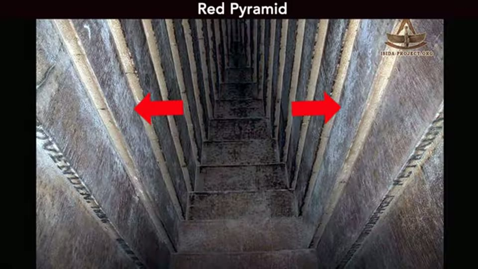

Curious Being
Egyptian Pyramids & the Impact of a Green vs. Desert Sahara
Tina · 15 min · watch on YouTube · summarised 2026-09-27
An answer to a question a viewer put to the acid drainage video: if the Great Pyramid's interior is a drainage system, why does it have only four air shafts, 9 inches — 23 cm — square? Are they not far too small?
Her reply is that the answer depends on the climate the pyramids were designed for, and the rest of the video goes to find out what that climate was.
Setting up the question
04:13–06:44 Cairo's total annual precipitation runs 18 to 26 mm, 0.7 to 1 inch, with the wettest month, January, averaging 7 mm. In a place that dry, small shafts would be enough.
So why have drainage at all, under a sealed casing? Three reasons she gives:
- Deserts flood. With no topsoil or vegetation to absorb it, heavy rain in arid country runs straight off and produces flash floods, which Egypt does occasionally get.
- The footprint is enormous. The Great Pyramid covers over 53,000 m² — 13 acres, about ten American football fields. Anything collecting rain over that area has to move it somewhere.
- Stone and concrete are porous. Her analogy is a kitchen worktop: stone stains because it absorbs, which is why modern stone and concrete surfaces are sealed and the seal maintained. Even good casing stones would saturate in a downpour and let water through, if only at the joints.
Before that she points at what she reads as the system still working 02:58–04:13. Efflorescence — the white bloom of water-soluble salts left as moisture evaporates out of masonry — is visible in the Great Pyramid, the Red and the Bent. She argues it is not dust, because the chambers are sealed off behind long narrow passages, and notes that the interiors are cleaned periodically, which is why some photographs show the salt and others do not.

The salt she reads as evidence that moisture is still reaching the chambers.
The paleoclimate
09:03–11:29 This is the part worth the entry.
The Sahara's climate swings with the strength of the North African Monsoon: strong monsoon gives more rain, more vegetation, a green Sahara; weak monsoon gives the desert. The most recent African Humid Period ran 11,000 to 5,000 years ago, with a dry interruption around 8,200 years ago. She shows a chart of green and desert phases across the last 230,000 years — two glacial cycles — on which the previous humid period falls around 87,000 to 78,000 years ago, and HS1, the long drought of 18,000 to 15,000 years ago, coincides with the severe human population bottleneck she has argued elsewhere marks the end of an advanced civilisation.

The long record of green and desert phases, and where the drought she ties to the population bottleneck falls in it.
Then she does something the corpus sees rarely: she quotes a paper, with its latitudes, and applies them. From **a 2019 paper in *Nature Communications***:
…the northeastern extension of AHP humidity, which suppressed dust emissions by at least 50% between 10 and 5 ka, was constrained south of latitude ~22°N… increased wetter conditions relative to present that existed in western Sahara up to ~28°N during the AHP.
The Egyptian pyramids sit above 29°N. On those figures they were outside the monsoon's reach even at the height of the Green Sahara, and she puts the paper's own map up with the proposed northern limit of monsoon precipitation marked on it.
The figure is worth looking at rather than taking on trust. It carries four dashed limits, lettered (a) to (d), and she narrates two of them — the proposed northernmost reach of monsoon precipitation, and the approximate northern extent of evidence for wetter conditions. The marker she puts on the pyramids sits on the outermost line, not clear of all of them. The conclusion holds for the monsoon limit and is tighter than it sounds for the wetter-conditions one.

The published figure her whole argument rests on: how far north the African Humid Period's rainfall reached, against where the pyramids are.
A reconstruction map of the Green Sahara makes the same point more simply: with savanna spread far north across what is now desert, the pyramid site is still in desert colouring.

What the region looked like at the height of the Green Sahara, with the pyramid site marked.
Her conclusion 12:36–13:46: whether the pyramids went up in a wet phase or a dry one barely matters, because this particular region got little rain either way. She adds the qualification herself — the Cairo area was still greener during the humid period, because the monsoon fed the Nile and the southern rivers, which recharged water sources downstream. But the rain falling on Giza was never much.
So the drainage system was built for a dry site with occasional storms, and four small shafts fit that.
Two things she gives away
13:46–14:25 More air shafts may exist and simply not have been found — small openings are hard to detect, and she points again at the uninvestigated niches in Khafre's subterranean chamber.
Then a real concession: the Great Pyramid's upper interior system might be experimental, like its eight-sided faces, since the later and in her view more advanced Khafre pyramid is neither eight-sided nor has chambers above ground. "The complex interior system in the Great Pyramid might not be necessary after all."
The problem she has made for herself
14:25–15:04 If Giza got no extra rain during the African Humid Period, then the water erosion on the walls of the Sphinx enclosure has lost its easiest explanation. She says so plainly, notes that the walls west of the pyramids are not as badly eroded as the Sphinx's, and asks whether the Sphinx might therefore be older than the pyramids — leaving it for the next video.
What you can check yourself
- Cairo's rainfall figures are published meteorology — around 18 to 26 mm a year, January the wettest month at about 7 mm.
- The Great Pyramid's footprint, a little over 53,000 m², is a survey figure.
- The African Humid Period's dates — roughly 11,000 to 5,000 years ago, with the 8,200-year event inside it — are standard paleoclimatology, and so is the monsoon mechanism behind the green and desert phases.
- The paper she quotes can be found from the journal, the year and the quoted sentences, and the latitudes in it are the whole of her argument: 22°N for the northeastern limit, 28°N in the western Sahara.
- The pyramids' latitude is a fact. Giza is at about 29.98°N, Dahshur at about 29.8°N. Whether they fall inside or outside the limits quoted is arithmetic anyone can do.
- Efflorescence is standard building science, and its presence in the pyramid chambers is documented by the early surveyors.
- Whether Khafre's pyramid is eight-sided and whether it has chambers above ground are both matters of published survey, and they are what her experimental-interior suggestion rests on.
- The Sphinx enclosure erosion is photographable, as is her comparison with the rock walls west of the pyramids.
What the video does not settle
- The whole question is posed inside her own hypothesis. "Are four shafts enough drainage" only arises if the shafts are drains, which is argued in the earlier videos and assumed here.
- Efflorescence does not show that anything is draining. She says herself that the moisture comes from inside the stone. Salts blooming on a damp wall record moisture in the masonry, not a system moving water through it, and the same deposits would appear with no drainage design at all.
- The dust argument works against her. The chambers are said to be effectively dust-free because they are sealed behind long passages — and in the next breath they are cleaned periodically by park staff, in a monument with a large daily footfall.
- Groundwater is not considered, although she has raised the Giza water table elsewhere as high enough to flood the bottom of the Osiris Shaft. Rising damp and condensation in a sealed stone chamber are the ordinary candidates for the moisture and neither is weighed.
- The 2019 paper is quoted and not named, beyond its journal and year. The quotation is precise; the citation is not.
- The 230,000-year chart is sourced, and unusually well. She names the proxy and the site on screen — the barium-to-aluminium ratio at Ocean Drilling Program site 968 in the eastern Mediterranean — which is specific enough to find. What is missing is the publication it is reproduced from.
- The construction window is assumed, not derived. "If the pyramids were built between 78,000 and 15,000 years ago" is stated as the alternative to the Holocene, with nothing in this video supporting either end of it.
- The experimental-interior concession is not followed through. If the Great Pyramid's upper chambers might not be necessary, then the drainage reading of the King's and Queen's Chambers — the argument of two previous videos — loses its best case. She raises the possibility in one sentence and moves on.
- Nothing here dates a pyramid. The video establishes what the rainfall was in two climate regimes; it does not place the buildings in either.
See also
Egyptian Pyramids Reveal Acid Mine Drainage Stains? — where the four-shafts question is raised and deferred to this video.
The Mystery of the Great Pyramid's Interior System? — the air shafts as drainage channels, and the salt in the Queen's Chamber.
Egyptian Pyramids' Interior Enigma That Experts Can't Explain — the acid drainage treatment reading of the substructures.
What were Great Pyramids' Function If Not Tombs? — the mine-waste hypothesis all of this sits inside.
Who Really Built the Megalithic Sites? — the population bottleneck at 18,000 to 15,000 years ago, which is the HS1 drought marked on the chart here.
Could the Giza Pyramids and Sphinx Be Much Older Than Believed? — the Sphinx dating question this video ends by reopening.